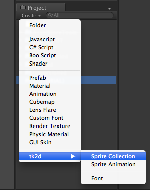
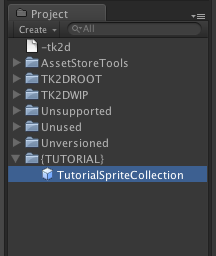
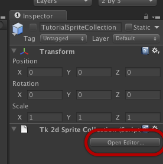
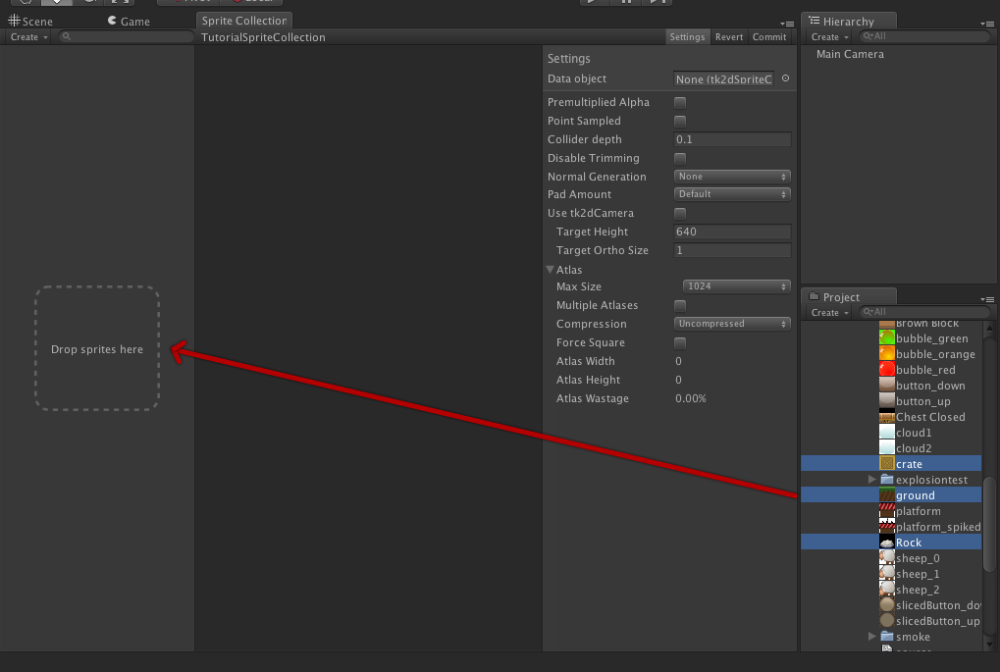
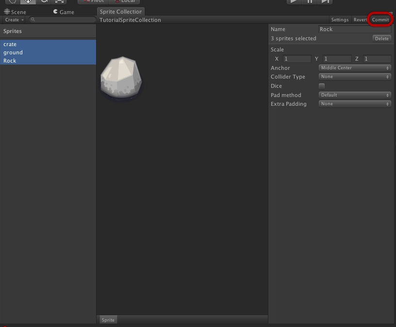

Documentation
Script Reference
Forum
Documentation
Script Reference
Forum
Sprite collections form the basis of the 2d toolkit. They hold a list of textures and their associated properties. The system handles creation of atlases and has various options for customization. Once created, any changes to your sprites will automatically rebuild the atlas.
From version 1.60 you can also add fonts into a sprite collection. Fonts added into a sprite collection can't use the gradients feature as that will require a separate material.
This walkthrough will go through the process of creating a simple sprite collection with the assets provided with 2D Toolkit.
Create a sprite collection by clicking on "Create > tk2d > Sprite Collection" in the Project Window. Alternatively you can find this menu in "Assets > Create > tk2d > Sprite Collection".

You should create a sprite collection within a folder. This will keep things nice and tidy, as the SpriteCollection will generate files when you commit the changes. This is not required, however.
You will now have a sprite collection in your project. You should now rename this to something sensible, so you will be able to find it later. We have renamed ours to "TutorialSpriteCollection"

Click on "Open Editor..." in the Sprite Collection inspector to open up the Sprite Collection editor.

You will now need to add your sprites to the sprite collection. You can do this by dragging textures to the "Drop Textures Here" box. In this example, we are dragging 3 textures from the demo directory. You can drag any of your textures, stored anywhere in your project. In this example, we will be dragging crate, ground and rock from /TK2DROOT/tk2d_demo/demospritecollection.
The textures in the collection will now be selected. You may now change any default parameters for the newly added sprites.

Note: You don't have to add all your textures at the same time. You can add them individually, or over a period of time.
Click commit

Note: You will need to click commit whenever you make any changes in the Sprite Collection Editor.
At this point, your Sprite Collection has created one or more atlases with the textures you have given it. These atlases and all the other associated data will be regenerated automatically whenever the source data changes.
Note: The Sprite Collection is set up by default to create Pixel Perfect sprites at a 960x640 resolution and an Ortho Camera with an orthographic size of 1. If your target resolution or camera settings are different, please change the Target Height property in the settings panel and recommit the changes.